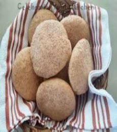
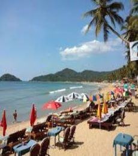
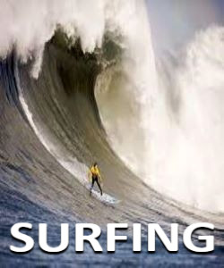
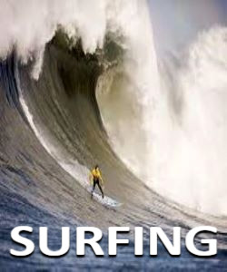

GOA
BEACH CAPITAL OF INDIA

Goa, situated on the west coast of India, is one of the most delightful states of India. Formerly a Portuguese colony, it is endowed with a variety of attractions including palm fringed beaches, miles of golden sands, lush green country-side, an incredible mosaic of cultural heritage, magnificent churches, temples, forts and monuments and a unique cultural synthesis of the east and west. With its tropical climate, Goa is a tourist destination for all seasons. Goa is a treasure trove of culture, music, dances and art forms that can be enjoyed during local festivals and celebrations. Animal lovers can visit the State's wildlife sanctuaries It is often said that 'Goa never stops partying'. The city is known for its vibrancy that attains its pinnacle in the annual Goa Carnival festival. Water sports, river cruises, ayurvedic massage centres, live music, restaurants, mouth watering sea food, Goa has it all. Myriad experiences of Goa promise to make your holiday an everlasting experience.
=========|| Food And Cuisines ||=========
1) Poee
Poee or poie is a leavened bread baked by the traditional bakers called poders in Goa, where it is a staple food. It has characteristics similar to a pita bread, notably that it is round, soft, and has a pocket. Coconut palm wine or toddy was traditionally used for the fermenting process but yeast is now used in commercial production. The bread is made from half-maida and half-whole wheat flour. Bread is a significant part of Goan cuisine, introduced by the Portuguese in the early 17th century. Ross poee, a dish of an omelet, xacuti and poee, is a typical item of Goan home cooking. Poee traditionally was prepared by fermenting it with toddy for two days, rolling it into a ball, flattening it, and baking it on the floor of a wood-fired oven.
2) Sanna

Often mistaken for an idli, a sanna is a Goan-Mangalorean festive delicacy made from a fermented mix of fat-grained parboiled rice, coconut, sugar, salt and that all-important leavening agent, the sap of coconut palm colloquially known as 'toddy' or sur in Konkani. Toddy is one of the main differences between sanna and idli. In idli, urad dal (black gram) is used for fermentation. Forsaking an idli steamer for a funnel-topped chondro steamer, sanna is always spooned into small, steel vatis (bowls), also called gindlaan in Mangaluru, which give it its round, cake-like shape unlike idli's convex contours. Texturally, a sanna is spongier, with a glossy white finish unlike the more crumbly idli — although often the red Goan parboiled rice renders a few tiny red flecks onto a sanna's surface.
3) Sorpotel

Sorpotel is a red meat curry that is wonderfully tangy and spicy at the same time. It is a dish of Portuguese origin, now cooked in the Konkan region of India - Goa, Mangalore and Maharasthra's East India Community. Goan Sorpotel is generally made using pork, but sometimes it also includes beef, mutton or chicken. Though originally intended to be made solely on the occasion of Christmas, it often appears at parties and other festivities today. It is very popular among Catholic households of Goa, as well as food lovers who have had this dish at least once.Sorpotel is often made in huge quantities for festivals, weddings and birthday parties. Thus, the preparation for the curry begins several days in advance. This is a boon in disguise, as Sorpotel gets better as it grows older.
=========|| Famous Places ||=========
1) Palolem Beach
Located in Canacona in Southern Goa, Palolem Beach is one of the most beautiful beaches in Goa. Known for its picturesque natural beauty and uncanny party vibes, this semi-circular beach is only a mile long. Therefore, you will not require much time to explore all the beautiful sites that the beach has to offer. So, whether you are thinking about venturing out with a partner, or on your own, Palolem beach will always be enjoyable to you in every way. The northern side of the beach is known to be a little bit safer, as the tides are somewhat calmer in this area. Nevertheless, if you have an unearthly thirst for adventure, then you should pay a visit to the southern part of the beach. In this section, the nature of the tides is more uncertain and precarious. Therefore, here, you can indulge in numerous types of water activities, such as kayaking and boat riding.
2) Fort Aguada

Fort Aguada is a 17th-century Portuguese fort looking out at the confluence of Mandovi River and the Arabian Sea. The crumbling ramparts of the fort stand on the Sinquerim Beach, approximately 18 km from Panjim. The highlight of the fort is a lone four-storey lighthouse and a stunning view of the sunset. Built-in 1612 as a protection from Dutch and Marathas, Fort Aguada was the most prized and crucial fort for the Portuguese and covers the entire peninsula at the southwestern tip of Bardez. The fort is so named after the Portuguese Word for water i.e. 'Agua' and used to be a replenishing source of freshwater for sailors. In fact, it has the capacity to hold 2,376,000 gallons of water and was one of the biggest freshwater reservoirs of Asia. Fort Aguada has also been used as Aguada jail. A statue in front of the jail salutes the freedom fighters, giving the fort a touch of patriotism.
3) Basilica of Bom Jesus

The Basilica of Bom Jesus Church located in Goa is one of a kind in India and is known for its exemplary baroque architecture. Built in 1594 and consecrated in 1605, the building of this church coincides with the beginning of Christianity in India. Even after 400 years, the remains are in good condition and are taken out once every decade. A site with rich cultural and religious significance, the Basilica of Bom Jesus has been declared a World Heritage Site by UNESCO. Literally translating to 'Holy Jesus', this is the only church in Old Goa that is not been plastered on the outside. Inside, the floor of the Basilica is made of marble mosaic with precious stones, giving it a solemn appearance. Above all is the image of the Holy Trinity, which is the most sacred symbol in Christianity. The Basilica of Bom Jesus is over 408 years old and is open to the public every day.
=========|| Things To Do ||=========

 
